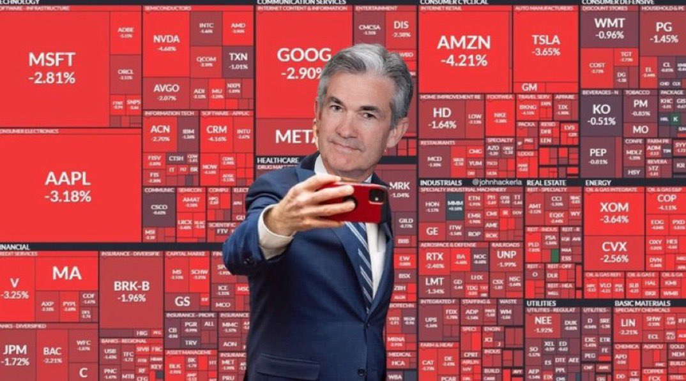
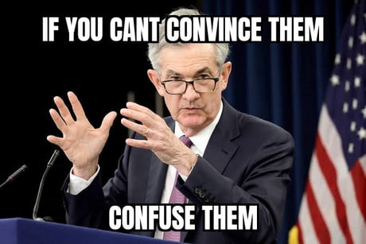

Jerome Powell Memes Collection
Funny Story: Jerome Powell and the Unexpected Market Reaction
Jerome Powell walked into the Federal Reserve meeting room one sunny morning, coffee in hand, feeling unusually cheerful. As he stood at the podium, he glanced around at the sea of nervous faces waiting for his every word.
"Good morning, everyone!" he chirped with a smile.
Instantly, phones buzzed and screens flashed red across the room. Traders scrambled, economists gasped, and journalists frantically typed updates. In the time it took Jerome to sip his coffee, the markets took his "good morning" as a cryptic signal. Stocks tumbled, bonds whipsawed, and somewhere in a distant trading floor, a junior analyst whispered, "Does he ever just say 'hi'?"
Unbeknownst to Jerome, his good mood was now trending on Twitter as "#PowellPanic," complete with memes of him cheerfully greeting a collapsing stock market graph. By lunchtime, the markets had recovered, realizing perhaps they had overreacted. But at the Fed, a new rule was quietly passed: Jerome Powell's morning greetings were to be replaced with a simple nod. Just in case.
 